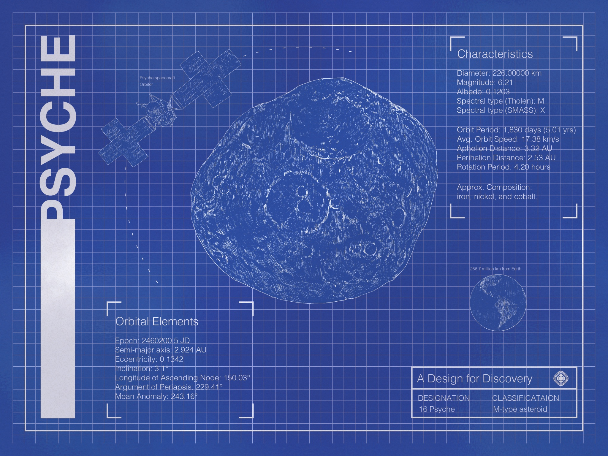
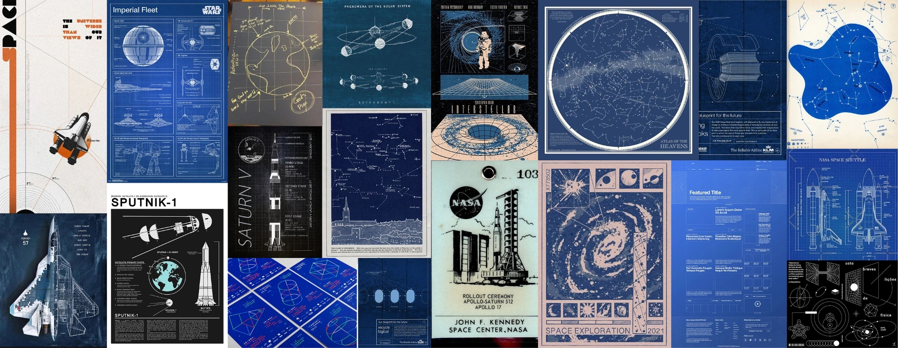
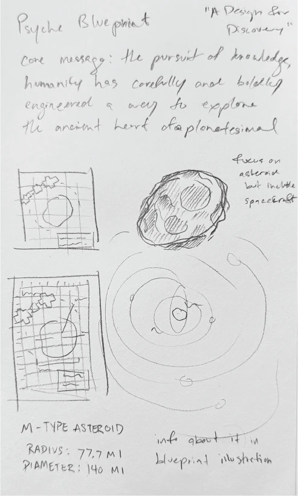
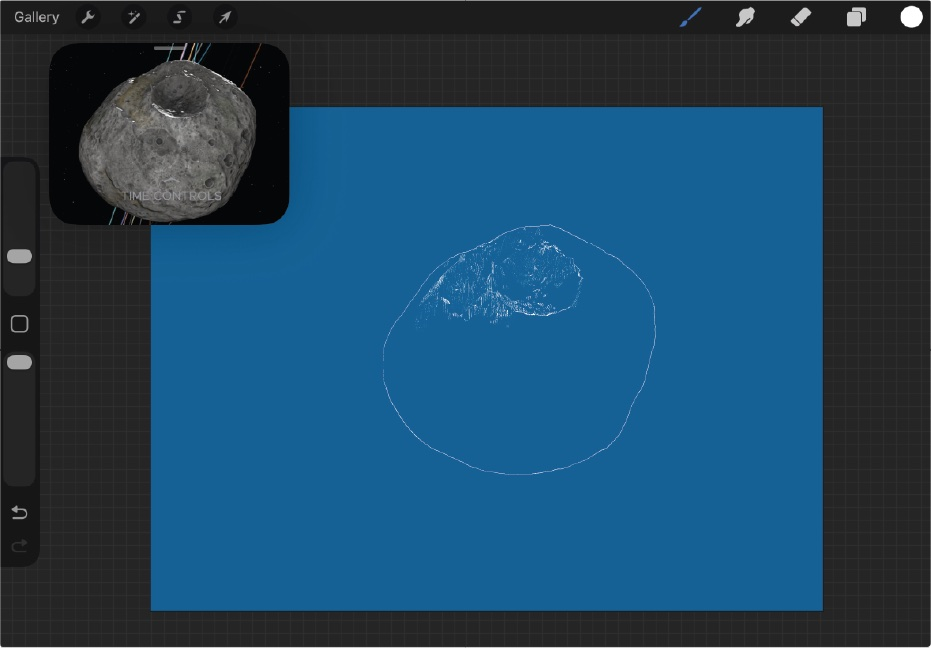

Illustration · Digital · NASA Psyche Inspired
A Design for Discovery
A digital vector illustration inspired by the Psyche mission and humanity’s enduring pursuit of knowledge.

01
About the work
Rendered in a blueprint-based visual language, the piece frames space exploration not as distant science fiction, but as the result of deliberate human ingenuity, courage, and care. At its core, the work asks the viewer to consider how far intention and curiosity can carry us—and how something once thought unreachable can become tangible through planning, collaboration, and belief.
02
Moodboard

The blueprint aesthetic is central to the meaning of the piece. Blueprints represent the unseen labor behind discovery: the calculations, revisions, failures, and quiet moments of problem-solving that precede every monumental achievement. By presenting Psyche—a metal-rich asteroid believed to be the exposed core of a planetesimal—as a drafted, measured object, the illustration emphasizes that exploration is not accidental; it is engineered. Every line, label, and orbit is a testament to human persistence and our desire to understand the ancient structures that shaped our solar system.
03
In progress

Sketch: core message and layouts 
Tracing the surface from a 3D model
The asteroid itself is treated as both a scientific subject and a symbolic “heart.” Psyche is billions of years old, a remnant from the earliest days of planetary formation, and exploring it represents an unprecedented step in planetary science. In this work, humanity’s spacecraft is shown carefully navigating this ancient body, reinforcing the idea that modern innovation is meeting primordial history. The contrast between precise human design and the raw, weathered surface of Psyche highlights the bravery required to approach the unknown with intention rather than fear.
04
Final
This project was created as a digital illustration using Adobe Illustrator, relying on vector linework, layered textures, and typographic structure to evoke the precision and clarity of engineering schematics. The clean geometry and controlled color palette reinforce the blueprint motif, while subtle surface detailing preserves the organic complexity of Psyche itself.
Ultimately, “A Design for Discovery” aims to bridge the emotional gap between humanity and space exploration. By grounding the imagery in familiar design language—technical diagrams, measured annotations, and clean structural layouts—the piece reframes space as something achievable and human.
Humanity’s greatest achievements are built carefully, bravely, and with the belief that understanding the universe is not only possible—but worth pursuing.